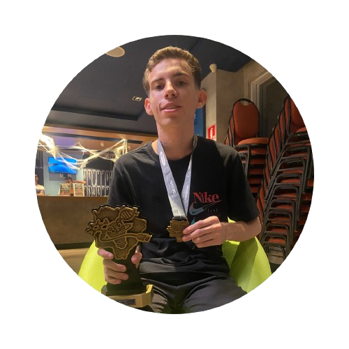
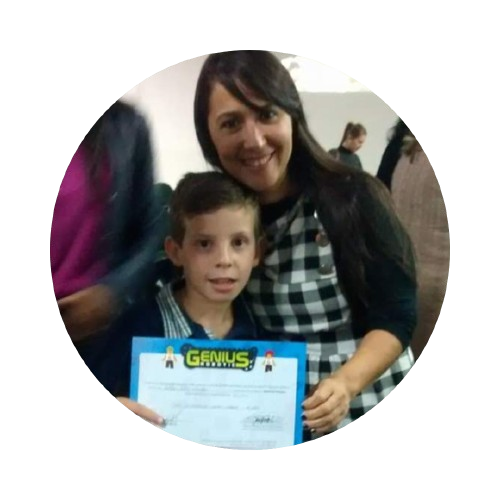

(2023) 2° - FECINOVA em Ciências Humanas; Ciências Sociais Aplicadas e Linguística - CHSAL, Instituto Federal de Mato Grosso do Sul.
(2023) Credenciamento - Para Feira Brasileira de Ciências e Engenharia - FEBRACE, Instituto Federal de Mato Grosso do Sul.
(2023) Credenciamento - Para o X Congresso Internacional de Licenciaturas - X Cointer PDVL, Instituto Federal de Mato Grosso do Sul.
(2023) 1° - FETECMS em Ciências Humanas - PICTEC; Feira de Tecnologias, Engenharias e Ciências de Mato Grosso do Sul, Grupo Arandú de Tecnologias e Ensino de Ciências (GATEC).
(2023) Moção de Parabenização - Pela Criação e Participação em Projeto de Pesquisa, Câmara Municipal de Nova Andradina – MS.


(2020) 1° - Aluno Nota 10; Melhor desempenho e comportamento em sala de aula, Escola Estadual Luiz Soares de Andrade.
(2019) 1° - Aluno Nota 10; Melhor desempenho e comportamento em sala de aula, Escola Estadual Luiz Soares de Andrade.
(2019) 1° - Aluno Nota 10; Melhor desempenho e comportamento em sala de aula, Evolua Profissional.